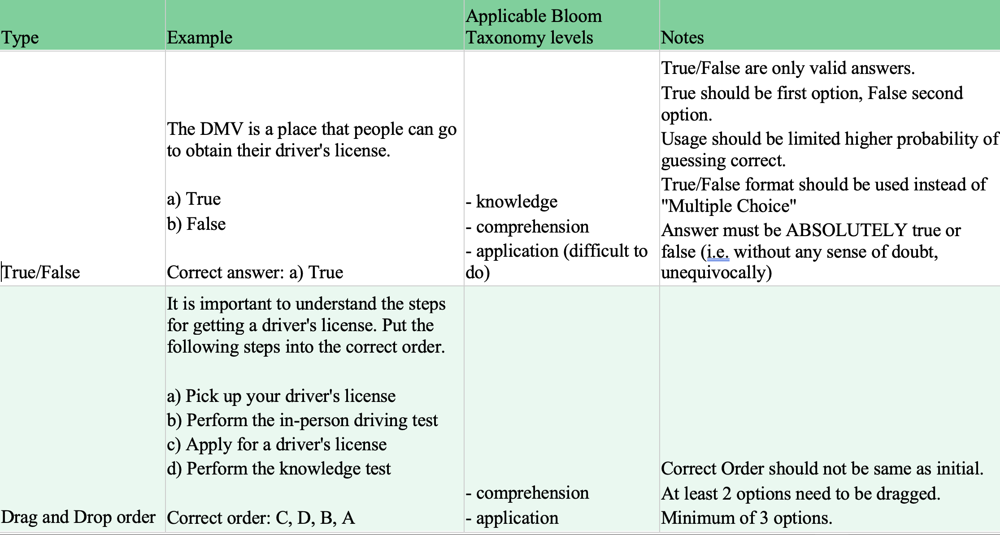
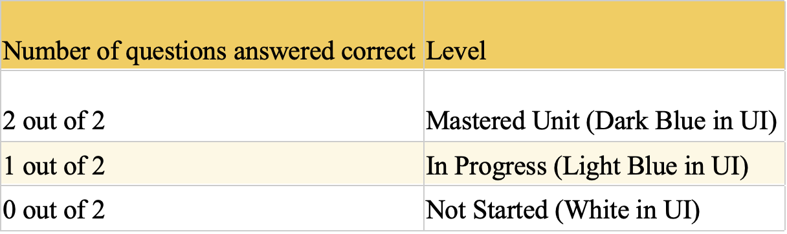

Gooru CSULB course and guidelines
Problem Statement
Gooru is a free education platform.
As a free education platform, Gooru need to allow lots of people of varying levels easily use their
platform.
They have a diagnostic tool that can help determine a user's current level of ability, so that the platform
can help direct the user to start at the correct part of a course. Similarly, many courses have assessments
as
part of the course that can help determine a user's comprehension of the part of the course they have just
participated in.
Gooru had a problem of consistency across courses, as diagnostics were unable to accurately determine a
user's level of ability and assessments were inconsistent in difficulty and correctness. They wanted help
creating
guidelines for course creators that would ensure assessments were consistent and diagnostics were reliable.
With this, Gooru wanted us to create a course for CSU Long Beach newcomers, representing an example of how
to follow these guidelines.
Methodology
The timeframe was very small for this project, and we were unable to recruit participants for studies,
therefore the majority of this study involved a small usability analysis, literature review and report
writing.
Usability Study
As we were unable to recruit participants, the usability study was primarily performed between myself and
colleague to understand areas of confusion, problems and potential solutions.

Literature Review
Literature review was comprised of 2 main areas of focus:
- Studies on assessments and question difficulty
- Studies and review of information on diagnosing education and topic levels
There are many studies and advice on assessments and their questions, particularly the number of
questions, question difficulty, and how these should be combined to come up with a suitable
assessment for varying levels of participants.
On the other hand, there is much less in the literature for diagnosing education level. Most
attempts to determine education level for a given topic is to prevent a person from requiring to
attend a course entirely, since this would likely be a waste of time, and these are typically
performed by an expert in the area sitting down with the candidate and interviewing them to
understand their knowledge level. This type of assessment is impossible for a free education
platform such as Gooru and they must rely on objective measures of testing for immediate feedback on
education level.
Deliverables
Guidelines
Guidelines were provided for both creating assessment questions and questions for diagnostic tools.
These were reported alongside more detailed information identified from the literature review and why
each guideline was suggested. The assessment guidelines were split up into separate dimensions:
preventing guessing, question clarity, question difficulty (with definitions), and question format,
whereas the diagnostic guidelines focused more on question difficulty and number of questions asked.
Examples of the guidelines can be seen below.


CSU Long Beach Course
My colleague and I created a CSU
Long Beach course on Gooru based off a similar course on the system, but with more content specific
to CSU Long Beach. The assessment and diagnostic criteria guidelines were followed when creating the course
to show that it was not difficult.
Other Findings
Our report to the client included several other findings that we identified from general usage of the
platform, such as unexpected page flow when using browser back/forward buttons, and diagnostics lacking the
ability to skip questions, which meant that participants could accidentally guess a correct answer,
indicating a higher level of knowledge of a topic than reality.
What if I had the chance to do it again?
If I had the chance to be able to do this study again, I would like the ability to interview
participants, particularly those with varying levels of experience with a given course or topic. I
would have also liked to have performed usability tests on the guidelines created, and identify
potential pitfalls and areas for improvement.